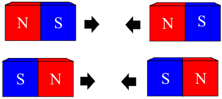
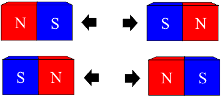
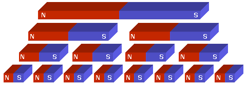
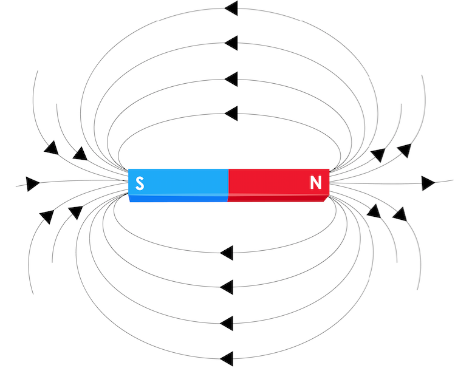
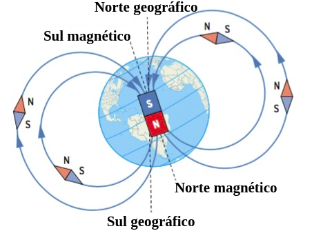
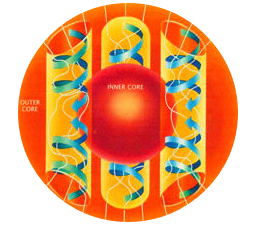

Aula11-84: Magnetismo
O fenômeno magnético é conhecido e estudado pelo homem há milênios. Os relatos mais antigos desse estudo no Ocidente apontam para a região de Magnésia, na Grécia antiga — atual território da Turquia. Foi dessa localidade que veio o nome da disciplina que estuda esses fenômenos: o magnetismo.
O ímã natural
O ímã natural, também chamado de magnetita, é um mineral — o óxido de ferro de fórmula Fe3O4. Ele possui a propriedade de atrair e repelir outros ímãs e minerais e de alterar as características de outros minerais, transformando-os também em ímãs.
Lei de Du Fay aplicada ao magnetismo
A lei de Du Fay estabelece a relação entre os sinais das cargas elétricas e suas interações de atração ou repulsão. No magnetismo acontece algo semelhante ao que ocorre na eletrostática — em que cargas de sinais iguais se repelem e cargas de sinais opostos se atraem: polos iguais se repelem e polos opostos se atraem.
|
POLOS DIFERENTES: ATRAÇÃO  |
POLOS IGUAIS: REPULSÃO  |
Princípio da inseparabilidade dos polos
Esse princípio afirma ser impossível existir um ímã com um único polo (o monopolo magnético). Em outras palavras: todo ímã é bipolar e seus polos são indissociáveis. Sempre que partimos um ímã, cada uma das partes resultantes é um novo ímã bipolar.

O fenômeno magnético, antes de se manifestar num bloco mineral, já está presente na estrutura atômica dos átomos que compõem esse bloco. Por isso, por mais que dividamos o mineral, as partes dessa divisão sempre conservarão as duas polaridades características do fenômeno magnético.
Magnetização e desmagnetização
Como vimos acima, o ímã natural pode alterar as propriedades de outros minerais, fazendo com que eles adquiram as propriedades de um ímã — a esse processo damos o nome de magnetização ou imantação. Essa alteração, no entanto, pode não ser permanente, isto é, pode ser desfeita — e a esse processo damos o nome de desmagnetização ou desimantação.
-
Magnetização: para magnetizar um objeto, devemos colocá-lo nas proximidades de um ímã. Materiais diferentes respondem de modos diferentes a esse estímulo e podem ser classificados em três grupos básicos:
➔ FERROMAGNÉTICOS: são os materiais que se deixam influenciar pela presença próxima do ímã e, consequentemente, têm suas características alteradas, tornando-se também ímãs. Os metais de transição geralmente são ferromagnéticos:
◦ Ferro;
◦ Níquel;
◦ Cobalto.
➔ PARAMAGNÉTICOS: são os materiais que se deixam influenciar muito pouco pela presença próxima do ímã e, consequentemente, quase não têm suas características alteradas. Alguns materiais paramagnéticos são:
◦ Alumínio;
◦ Vidro.
➔ DIAMAGNÉTICOS: são os materiais que, assim como os paramagnéticos, se deixam influenciar muito pouco pela presença próxima do ímã e, consequentemente, quase não têm suas características alteradas. O que os diferencia dos paramagnéticos é que, ao serem magnetizados, eles adquirem polos com orientação oposta à do campo magnético externo aplicado. Alguns materiais diamagnéticos são:
◦ Ouro;
◦ Prata.
-
Desmagnetização: podemos fazer um ímã perder suas propriedades magnéticas submetendo-o a um dos processos abaixo:
➔ IMPACTO: se sujeitarmos um ímã a impactos violentos e/ou constantes, certamente o faremos perder ou enfraquecer suas propriedades magnéticas;
➔ AQUECIMENTO: se elevarmos a temperatura de um ímã, certamente o faremos perder ou enfraquecer suas propriedades magnéticas.
Campo magnético
A definição de campo magnético é semelhante à dos campos gravitacional e elétrico: o campo magnético é uma característica que o espaço adquire sempre que nele existe um ímã (ou cargas elétricas em movimento — veremos isso mais adiante). Estando o espaço sob a influência de um ímã, ele passa a comunicar a outros ímãs a presença do primeiro, originando neles forças magnéticas.
Assim como ocorre com os campos gravitacional e elétrico, podemos representar o campo magnético por meio de linhas de força:

A unidade de medida do campo magnético no SI é:
→ Por convenção, dizemos que, na parte externa do ímã, as linhas de força saem do polo norte e penetram no polo sul.
→ A direção das linhas de força indica a orientação do campo magnético e, por conseguinte, a orientação dos ímãs que forem colocados sobre a região em questão.
→ A densidade de linhas numa determinada região indica a intensidade do campo magnético.
O magnetismo terrestre
Há milênios os seres humanos acreditavam que, na região ao norte do planeta, havia enormes cordilheiras de rocha magnetita, pois, sempre que suspendiam uma rocha desse tipo por um barbante (eis uma bússola), ela se desviava e apontava para o norte. O polo da magnetita que apontava na direção norte recebeu o mesmo nome: norte. Muitos anos se passaram, os polos terrestres foram explorados e descobriu-se que as cordilheiras não existiam.
Em 1600, o astrônomo britânico William Gilbert sugeriu que a Terra poderia ser uma enorme rocha de propriedades semelhantes às da magnetita; daí resultou a conclusão de que o polo terrestre que atrai o polo norte da bússola é o polo sul magnético da Terra.

Mais recentemente, descobriu-se que o núcleo do planeta Terra é demasiado quente para preservar rochas de características magnéticas. Segundo a teoria do dínamo, a explicação mais aceita atualmente, há ferro e níquel líquidos e eletricamente condutores em movimento no centro do planeta; assim, são as cargas elétricas em movimento as responsáveis por promover o eletromagnetismo do globo.
